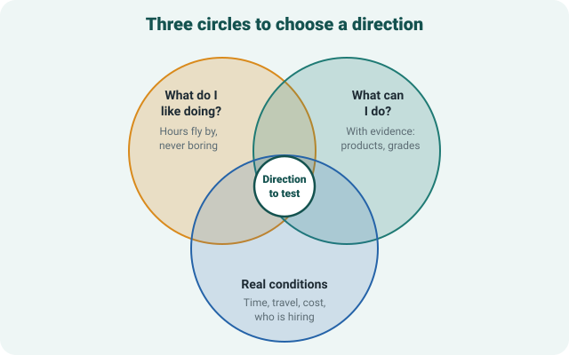

K7 · Self-directed learning and career development › Level 2 Starting
Know yourself and choose directions to test with three circles
The Getting Ready for Work course (N2) has 7 lessons. Each lesson completes one sheet of your Job-ready file. This lesson completes Sheet 1: Direction map. Print it from N2 templates.
1. Objectives
- Write a three-circle map: what you like doing, what you can do with evidence, and your real conditions.
- Choose 2 directions to test and plan one small test within 14 days.
2. Retrieval warm-up
This is the first lesson, so the questions draw on your own experience. Answer without looking at anything.
- Name 3 things you have done where you lost track of time.
- Name 3 jobs where you know clearly what a working day looks like.
Hints
- School, home, clubs and part-time work all count. For example: fixing bikes, designing a poster, tutoring a younger sibling.
- If you struggle to name more than one job, you need to explore more. This lesson helps with that.
Younger pupils have their own course: Jobs around me (in Vietnamese).
3. Explanation
Many people wait to "find their passion" before choosing a direction. That often leaves them standing still. A more practical way is to choose a few directions to test, then let the results guide you.
The three-circle map. Write three lists on paper:

- Like doing. Write activities, not job titles. "Organising things neatly" is clearer than "I like accounting".
- Can do, with evidence. Add one piece of evidence to each line: a product, a grade, or feedback from someone else.
- Real conditions. Free time, travel distance, study costs, and the fields hiring where you live.
From activities to job directions. Look where circles 1 and 2 overlap. Ask: "Which jobs involve a lot of these activities?" List 3–5 directions. Filter them through circle 3. Keep 2 directions to test.
Small tests. A test is a short, cheap action that gives you real information:
Four kinds of small test
After the test, write 2 lines: what surprised you, and whether you will keep testing or change direction. Changing direction is not failure. You have just ruled out one direction with real information.
Interest quizzes can suggest more directions. But a quiz result does not decide for you.
4. Workplace example
Hypothetical scenario. Aisha is 17 and in her second-to-last year of secondary school. She cannot decide between "studying business" and "studying design".
Aisha writes her three-circle map:
| Circle | Aisha writes |
|---|---|
| Like doing | Making posters for her class; editing photos; planning group trips |
| Can do (evidence) | Her school used her poster for the summer camp; good maths marks; friends often ask her to plan schedules |
| Real conditions | Free on Saturday and Sunday evenings; can cycle up to 5 km; her family cannot afford high fees |
From the overlap of circles 1 and 2, Aisha lists: graphic design, marketing, event planning. Circle 3 rules out one expensive college. She keeps 2 directions: graphic design and event planning.
Her tests: Aisha talks to her cousin, who works as a designer at a print shop. She also volunteers for one day at a book fair.
Result: Aisha is surprised that designers revise their work many times for clients. She still likes it, and wants to keep testing with a free course.
Why this works: Aisha relies on activities and evidence, not on field names that sound good. Two tests give her real information after only 2 weeks.
5. Practice
Hypothetical scenario. Leo is a first-year accounting student. He likes fixing computers for people he knows, and he plays football. He has reinstalled computers for 6 people, and all of them praised him. Leo is free in the evenings, lives on the edge of the city and needs to cover some of his own costs.
Write a three-circle map for Leo. Choose 2 directions to test and 1 small test.
Hint 1
Circle 2 needs evidence. "Reinstalled computers for 6 people, all praised him" is good evidence. "Plays football" belongs in circle 1, but there is no evidence yet for a job.
Hint 2
Circle 3 has two important points: free in the evenings and needs income. The test could also be a part-time job.
Model answer
- Like doing: fixing computers, exploring software, playing football.
- Can do: reinstalled computers for 6 people, with praise; high marks in IT.
- Real conditions: free in the evenings, lives on the edge of the city, needs income.
- Two directions to test: IT support, and accounting with software (close to his current course).
- Test: apply for evening shifts at a computer repair shop for 2 weeks. Talk to an older student who works in accounting.
(Names and details are hypothetical, for illustration.)
6. Self-check
Choose an answer. Every option has an explanation.
Question 1. Lily writes in her "Can do" circle: "Good at drawing". Which version is better?
-
Not quite. It is still a self-claim. It does not point to specific evidence.
-
Correct. Correct. There is a specific product that others used. That is evidence.
-
Not quite. This is a wish. It belongs to directions to test, not to evidence of ability.
Question 2. Ken writes in his "Like doing" circle: "I like being a doctor". What is the problem?
-
Not quite. A job title does not show which activities in that job Ken enjoys.
-
Correct. Correct. Activities help you find many jobs that involve them, not just one.
-
Not quite. Without "Like doing", you may pick work you can do but quickly get bored of.
Question 3. Which small test best fits the direction "making drinks as a barista" within 14 days?
-
Not quite. It costs a lot of time and money before you have any real information.
-
Not quite. Useful for research, but it is not trying the work or talking to a real person.
-
Correct. Correct. It is short and cheap, and gives real information about a working day.
Question 4. After her test, Aisha finds event planning is not a good fit for her. What should she do?
-
Correct. Correct. Ruling out a direction with real information is a useful result.
-
Not quite. A test exists to give information. "Not a fit" is valuable information too.
-
Not quite. Then the test no longer guides her decision.
7. Reflection
- Which line in your circle 2 still lacks evidence? How could you create that evidence?
- If a test shows "not a good fit", what will you write down so you choose better next time?
8. Real-world application
In the next 7 days, complete Sheet 1: Direction map. Set a date for one small test within 14 days. If you are under 18, tell someone at home who you are meeting and where.
The next lesson uses these 2 directions to read and choose job ads.
Values and deeper self-understanding are covered on daynentang.com and tamhonkhoe.com.
9. Metadata
| skill | K7 · Self-directed learning and career development |
|---|---|
| level | Level 2 · Starting |
| group | N2 |
| framework_map | WEF: Curiosity and lifelong learning; CSfW: 1a Manage career and work life; SkillsFuture CCS: Learning Agility; NACE: Career and Self-Development; LifeComp: L3 Managing learning (reference only) |
| original | Vietnamese version |
| updated | 2026-11-14 |
Finish the lesson
Mark it as done and the site suggests reviews after 1, 3 and 7 days. The data stays on your device only.
Suggested reviews: